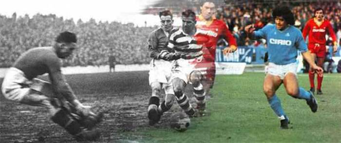

Football history Welcome to Football History a website about football history including competitions, teams and players.

History of football
The history of football (soccer)
Football, also known as soccer or association football, is one of the most popular sports in the world. Its history stretches back thousands of years, although the modern game did not come from one single ancient sport. Instead, different cultures developed their own ball games over many centuries, and football gradually evolved through changes in rules, playing styles and organisation. The modern form of the game is most closely connected to Britain, particularly England, during the 19th century.
Early Ball Games
Long before modern football existed, people in different parts of the world played games involving balls. In ancient Mesoamerica, civilisations such as the Maya and Aztecs played important ball games using heavy balls made from rubber. These games were very different from football and were often connected to religious and cultural traditions. They demonstrate, however, that organised ball games have existed for thousands of years. One of the earliest known games that involved deliberately kicking a ball was cuju, which was played in ancient China by at least the 2nd century BC. Players used their feet to control a ball and, in some versions, attempted to kick it through a target. Cuju became popular in Chinese society and was played for recreation, training and entertainment. In Japan, a different game known as kemari later developed, in which players worked together to keep a ball in the air using their feet. Although cuju and kemari were not modern football, they are important examples of early kicking games. Australia also has a long history of traditional ball games. Aboriginal Australians played games such as Marn Grook, which involved kicking, catching and passing a ball. The game was played by different Aboriginal communities before European settlement and was later documented by European observers. Some historians have suggested that Marn Grook may have influenced the development of Australian Rules football, particularly its kicking and marking skills. However, the exact extent of this influence is still debated, so it is more accurate to describe it as a possible influence rather than a proven direct origin. Ancient European societies also developed their own ball games. The Greeks played several different games using balls, while the Romans played a physical game known as harpastum, which involved teams competing for possession of a ball. These games show that ball sports were popular in the ancient world, but there is no clear evidence that they directly developed into modern association football. They are better understood as part of the much broader history of human ball games rather than direct ancestors of today's sport.
Football in Medieval England
Forms of football began appearing in medieval England, although they looked very different from the organised game we know today. These early games were often played during festivals or between neighbouring communities and could involve very large numbers of people. There were usually few standardised rules, and games could take place across streets, fields and open areas. Players could use both their hands and feet, making these games quite different from modern association football. Because some of these games became disorderly and caused injuries, property damage and disruption, English authorities attempted to restrict or ban them at different times. Despite these restrictions, football-like games continued to be played. Over time, the sport became increasingly popular in schools and communities, creating the conditions for football to become more organised during the 19th century.
The Development of Modern Football
The biggest changes in football happened during the 19th century, particularly in England. Football became popular in public schools, universities and clubs, but there was a major problem: different groups often played using different rules. Some versions allowed players to carry the ball, while others focused almost entirely on kicking. This made it difficult for teams from different places to play against one another. A major turning point came on 26 October 1863, when representatives from several London clubs and schools met and formed The Football Association (FA). Their goal was to create a common set of rules for the game. The first Laws of the Game were agreed later that year, establishing important rules that helped distinguish association football from rugby football. Under the new rules, players could not simply run with the ball in their hands or use the type of physical play associated with rugby. The creation of the FA helped give football a much clearer identity. The first match played under the new FA rules took place on 19 December 1863 between Barnes and Richmond, ending in a 0–0 draw. Football continued to grow, and the FA Cup was established in 1871, with its first final taking place in 1872. International football also developed, with England and Scotland playing what is recognised as the first international football match in 1872. As football continued to expand, more organisations were created to manage and develop the sport. In 1886, representatives from England, Scotland, Wales and Ireland established the International Football Association Board (IFAB) to help maintain and develop the Laws of the Game. In 1904, FIFA was founded in Paris, helping football become increasingly organised at an international level.
Football Becomes a Global Sport
Football spread from Britain to other parts of Europe and eventually to countries around the world. Clubs, leagues and national teams were established in many countries, and the sport developed into an international competition. The first FIFA World Cup was held in Uruguay in 1930, marking an important moment in the history of international football. Today, football is played at professional, amateur and community levels across almost every part of the world. Major competitions such as the FIFA World Cup, continental championships and domestic leagues attract millions of players and supporters. Although football has changed greatly since the early games played centuries ago, the basic idea remains simple: two teams compete to score by getting the ball into the opposing team's goal. The history of football is therefore not the story of one ancient game becoming modern football overnight. It is a long process involving many different cultures, games and traditions. However, the most important stage in the creation of modern association football was the standardisation of the rules in England during the 19th century, particularly the formation of The Football Association in 1863.